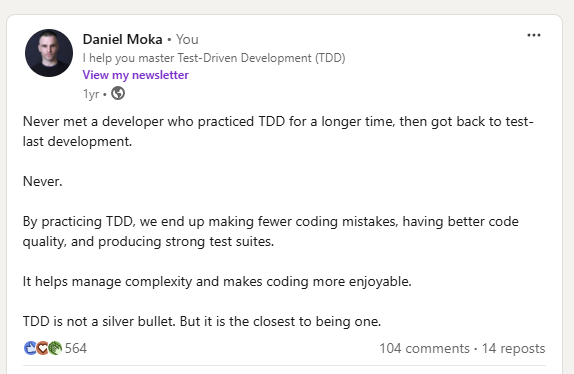

class: center, middle # Test doubles --- # Smell #1 - Fragile tests ❌ Problem Your tests fail to compile when you change the production code. 🔃 Cause Your tests are coupled to low-level implementation details such as internal functions or classes. --- # Smell #1 - Fragile tests Coupled to implementation details like `FindById(..)` and `Store(..)` methods. ```cs [Test] public void UserServiceShouldActivateUser() { // Arrange var user = new User(); var userStoreMock = new Mock<IUserStore>(); * userStoreMock.Setup(mock => mock.FindById(It.IsAny<Guid>())).Returns(user); var userService = new UserService(userStoreMock.Object); // Act userService.Activate(user); // Assert * userStoreMock.Verify(x => x.Store(It.Is<User>(u => u.IsActive)), Times.Once); } ``` --- # Smell #1 - Fragile tests ✅ Solution: couple tests to the behaviors of the public APIs ```cs [Test] public void UserServiceShouldActivateUser() { // Arrange var user = new User(); var userStoreFake = new UserStoreFake(user); var userService = new UserService(userStoreFake); // Act userService.Activate(user); // Assert user = userStoreFake.Users.First(); Check.That(user.IsActive).IsTrue(); } ``` --- # Smell #2 - Mocking 3rd party libraries ❌ Symptom Mocking 3rd-party libraries directly. 🔃 Cause Mocking libraries are easy to misuse. ``` List<UserProfile> GetUserProfiles() { _azureAPI.Authorize(); // Leads to complex test setup let azureUsers = _azureAPI.GetUsers(); // Tight coupling let profiles = ConvertToUserProfiles(azureUsers); return FormatProfiles(profiles); } ``` --- # Smell #2 - Mocking 3rd party libraries ✅ Solution: Mock your dependencies using one of the five test doubles. ``` interface IUsersService { IList<User> GetUsers(); // Expose only what you need } List<UserProfile> GetUserProfiles() { let users = _usersService.GetUsers(); // Easily mockable let profiles = ConvertToUserProfiles(users); return FormatProfiles(profiles); } ``` --- # Smell # 3 - Non-deterministic tests ✅ Solution: Decouple your code ``` public class DeliveryService { private readonly IDateTimeProvider _dateTimeProvider; public DeliveryService(IDateTimeProvider dateTimeProvider) { _dateTimeProvider = dateTimeProvider; } public bool IsDeliveryAvailable() { var now = _dateTimeProvider.UtcNow; if (now.DayOfWeek == DayOfWeek.Saturday) { return now.Hour >= 9 && now.Hour <= 17; } return now.Hour >= 7 && now.Hour <= 19; } } ``` --- # Temp <div style="text-align: center;">  </div>